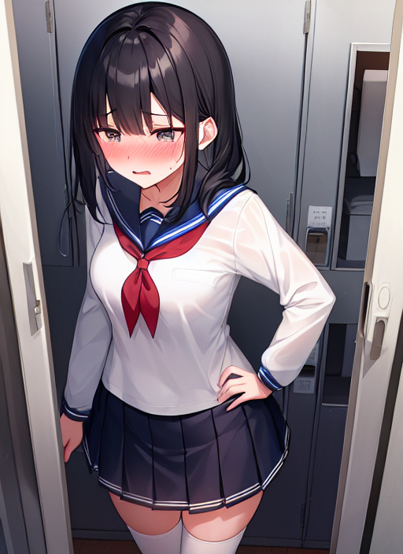

廃校
とある田舎町にある廃校。
生徒数の減少でかなり昔に廃校となり、現在も解体されることなく放置されたままとなっている。
そして、その廃校に訪れた一人の男性。
彼の名は瀬戸碧月といい、廃校マニアとしてネット上で名の知られている人物で、全国に存在する廃校を巡っては写真を撮ってホームページに載せることを趣味としているのである。
「ここがかの有名な西幡豆中学校か…。」
どうやら、彼の訪れた中学校はネット上でも有名らしく、廃校して相当経つのにもかかわらず少し手直しをすればすぐにでも学校として再開できるほど朽ちた様子が見受けられない。
「さて、取材と行きますか。」
そして、カメラを手にした碧月は施錠もされていない正門から中学校の敷地内へと入っていった。
校舎中に入るといかにも昭和の学校っという雰囲気で、階段や手すりが木造なのはもちろん、黒板も緑のタイプではなくて本当に黒々としたものであり、生徒が使う椅子や机も木製であった。
しかし、廃校にしては床は朽ちておらず、手洗い場の蛇口も全く錆びていない。
教室内の備品にもクモの巣やホコリはついておらず、明らかに今までの廃校とは雰囲気が異なっている。
「これ、マジで廃校か？ 全然現役の学校として使えるレベルだぞ？」
碧月もおかしいと思いつつも、とりあえずはカメラでパシャパシャと写真を撮っていくのだった。
校舎内を散策し始めて３０分、碧月はとある部屋にたどりついた。
「女子更衣室？ ちょっと覗いちゃおうかな…♪」
廃校で誰もいないことをいいことに、鼻の下を伸ばしながら碧月は中へと入っていった。
「へぇー、別に普通の更衣室なんだな。」
変な期待をして中に入った碧月だったが、特段男子更衣室と変わりなかったのか落胆している。
「何もなさそうだから、出るか…。」
そう思い、更衣室から出ようとする。
すると、碧月は棚の中にあるものが入っているのに気づいた。
「えっ、セーラー服！？」
それは、この中学校の制服と思われる紺襟で白色のセーラー服が入っていた。
「嘘っ！？ ちょっとこれすごいじゃん！？」
思わぬものを見つけて興奮した碧月は、棚の中にあるセーラー服を取り出してまじまじと眺め始めた。
「かつての生徒が使ってたやつだろうな。そんなに傷んでないし、ちょっと着てみるか…♪」
碧月は何を思ったのか、突然上着のシャツを脱いでセーラー服に袖を通したのだった。
「うぉー、なんか興奮してきたぞ…♪」
袖を通し終えて上半身がセーラー服姿の碧月。
どういうわけか、セーラー服は碧月の体にぴったりのサイズだったのだ。
「てか、俺の体にぴったりって、どれくらい大きい子だったんだ？」
碧月もその点には疑問に思った様子。
「さて、そろそろ脱ぐとするか。」
そう言って、襟をつかんでセーラー服を脱ぎ始める碧月。
だが、様子が変だ。
「あれっ！？ 脱げない！？」
なぜか着ていたセーラー服が脱げなくなってしまったようだ。
必死に襟を引っ張って脱ごうとするが、襟が全く伸びない。
「くそっ！？ いったいどうなってやがるんだ！？」
脱げないことで焦りだす碧月。
すると、突然着ていたセーラー服がピカーッと光りだし、１０秒ほどで光は収まった。
「うわっ！？ まぶしっ！」
突然の光に反射的に目を閉じる碧月。
そして、光が収まったと同時目を開ける。
「今のは一体…？」
先ほどの光に対して疑問に思う碧月。
すると、碧月の体に異変が起きた。
男でいうロングな髪の毛がパサパサと長くなっていき肩の手前で止まり、茶色に染めていたものが全体的に黒くなっていった。
黒々とした髭の生えた角ばった顔は、丸々とした白色の肌のかわいい顔つきに変わる。
肩幅も狭くなっていき、筋肉だったものが柔らかい脂肪へと変わっていき、肌の色も白くムダ毛が一切なくなる。
身長もぐぐぐっと１５０センチほどに縮んでいき、同様に足や腕も細く縮んでいく。
「俺、いったいどうなって…？」
自分の体の変化に唖然とする碧月。
だが、まだまだ変化が終わらなかった。
「む、胸が…！？」
胸元に目をやると、ムクムクと２つの膨らみが形成されていき、Ｄカップほどの乳房が出来上がった。
「もしかして、女になってる！？」
乳房が出来上がったことで自分が女性に変えられていることに気付く碧月。
「やだ、女になりたくない！！」
必死に抵抗を試みるが、体中に伝わる何かによって身動きが取れない。
その間にも変化は続き、体内では染色体や臓器なども男性のものから女性のものに作り替えられていき、ついには股についていた男性器もきれいさっぱり無くなったのだ。
おなかの形も括れができたものになり、おしりも若干であるが膨らんでいる。
喉仏もなくなってしまい、口から出る喘ぎ声もかわいい女子の声へと変化していった。
「はぁー、はぁー…。あたし、どうなって…？って、あたしって何！？」
どうやらからだの変化が収まったようだ。
しかし、それは中学生くらいの少女の姿になっており、しゃべり方も年相応のものに変わったのだった。
すると、今度は着ていた服が変化を始めた。
「キャッ！？」
ダブダブだったセーラー服が縮んでいき、今のからだのサイズに合うものになった。
ところどころ傷んでいたところがひとりでに修復されていき、新品に近いくらいきれいなものになった。
どこからかスカーフが現れて胸元でキュッと結ばれていき、左胸のポケットのところには名札が現れた。
それは、廃校になった中学のものではなく、今でも同じ町に存在する中学のものだった。
そして、名札に『形原美琴』名前が書かれていった。
はいていたズボンはいつの間にか紺色のプリーツスカートとなっており、靴下もスニーカーソックスから白のハイソックスに、履いていた靴もスニーカーから白の通学シューズに変わった。
こうして、成人男性だった碧月はセーラー服を着た女子中学生へと生まれ変わったのだった。
「あれっ、私ってなにしてたんだっけ…？」
女子中学生になったことで先ほどまでの記憶がなくなったようだ。
すると、後ろから声が聞こえてきた。
「美琴ちゃん、もう見学は済んだかね？」
振り返ると、そこには初老の男性が立っていた。
「あっ、町長さん。ハイ、終わりました。」
「でも、なんで急にここに来たいと思ったのかね？」
「文化祭の出し物で映画を作ることになって、ロケ地にここを使おうかなと思いまして。」
「なるほどね。んで、どういう内容の映画を作るのだい？」
「えーと、現代の中学生がタイムスリップして昭和の時代に迷い込むって設定の映画です。」
「へぇー、面白そうじゃないか。」
「完成したらぜひとも町長さんにも見てもらいたいです♪」
「それじゃあ、楽しみにしておくよ。」
「ありがとうございます！」
「それじゃあ、そろそろ帰ろうか。」
「ハーイ♪」
見学を終えた碧月改め形原美琴は、町長と一緒にその廃校をあとにした。
「フフッ、これでまた１人…。また、興味本位で廃校に来た奴には罰として可愛い女子にしてやらんとな。」
「町長さん、どうしました？」
「いいや、何でもないよ。」